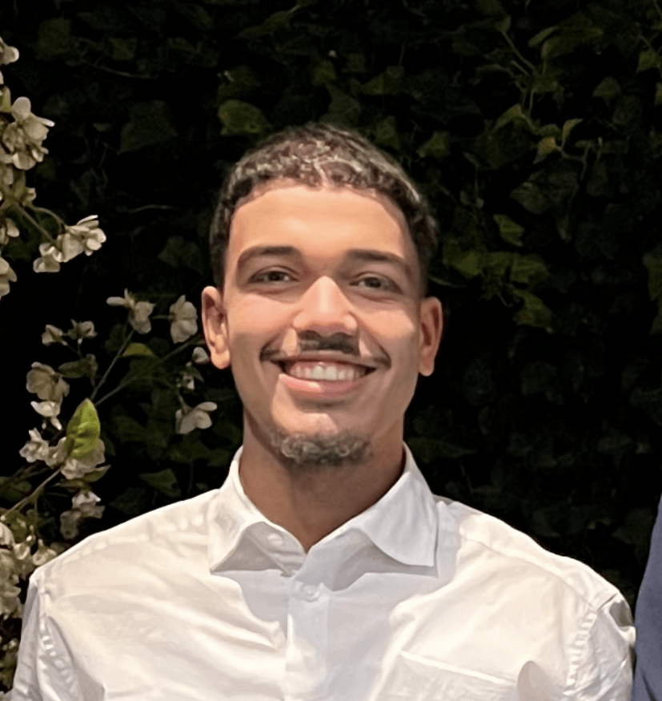

Portfolio Zakaria El Boukhrissi

Ik ben Zakaria. Ik ben 23 jaar en geobsedeerd door IT. Mijn passie begon op mijn achtste met Minecraft. Vandaag duik ik in virtuele werelden met de Meta Quest 3S. De snelle vooruitgang in hardware en software fascineert mij enorm. Stilzitten is geen optie want ik wil vooroplopen in de digitale evolutie. Met mijn IT-opleiding ontrafel ik alles van de kleinste chip tot de slimste software. Ik wil niet alleen technologie gebruiken. Ik wil exact snappen hoe het achter de schermen werkt.
mijn werk